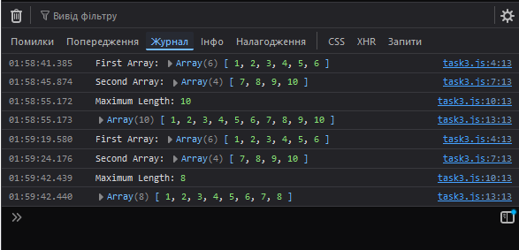

Завдання №3
HTML-код (task3.html)
<!DOCTYPE html> <html lang="en"> <head> <meta charset="UTF-8"> <meta name="viewport" content="width=device-width, initial-scale=1.0"> <title>= Task 3 =</title> <link rel="stylesheet" href="style1.css"> </head> <body> <header></header> <main> <div class="button-container"> <h1>= Завдання №3 =</h1> <input type="button" class="button" onclick="window.location.href='./index.html'" value="На початкову сторінку"> <input type="button" class="button" onclick="userInput()" value="Викликати js-код"> </div> </main> <footer></footer> <script src="./task3.js"></script> </body> </html>
JS-код (task3.js)
// Функція для отримання даних від користувача function userInput() { let firstArray = getValidArray("Please enter the elements of the first array separated by spaces:"); console.log("First Array:", firstArray); let secondArray = getValidArray("Please enter the elements of the second array separated by spaces:"); console.log("Second Array:", secondArray); let maxLength = isValidNumber("Please enter the maximum length of the array:"); console.log("Maximum Length:", maxLength); let result = makeArray(firstArray, secondArray, maxLength); console.log(result); } // Функція для перевірки, чи є введене значення дійсним числом function isValidNumber(promptMessage) { let value; while (true) { value = Number(prompt(promptMessage)); if (!isNaN(value) && value > 0 && value !== null && value) { return value; } console.log("Please enter only valid numbers (positive numbers)."); } } // Функція для отримання і перевірки масиву чисел від користувача function getValidArray(promptMessage) { let array; while (true) { // Отримання введеного рядка та перетворення його на масив чисел let input = prompt(promptMessage); array = input.split(" ").map(Number); // Перевірка, що всі елементи масиву є числами if (array.every(num => !isNaN(num))) { return array; } console.log("Please enter a valid array (only numbers)."); } } // Функція для об'єднання двох масивів із врахуванням максимальної довжини function makeArray(firstArray, secondArray, maxLength) { // Створення нового масиву шляхом об'єднання двох масивів let newArray = [...firstArray, ...secondArray]; // Перевірка, чи довжина нового масиву не перевищує максимальну довжину if (newArray.length > maxLength) { return newArray.slice(0, maxLength); // Обрізаємо масив до максимальної довжини, якщо це необхідно } else { return newArray; // Повертаємо об'єднаний масив, якщо він не перевищує максимальну довжину } }
Результат виконання
Коментар до JS-коду
Ця програма дозволяє користувачеві ввести два масиви чисел та обмежити максимальну довжину об’єднаного масиву. Валідація введених даних здійснюється за допомогою getValidArray, що приймає лише масив чисел, і isValidNumber, яка обмежує введення позитивними числами. Функція makeArray об’єднує два масиви, і якщо їхня сукупна довжина перевищує зазначену максимальну, обрізає об'єднаний масив до потрібної кількості елементів.